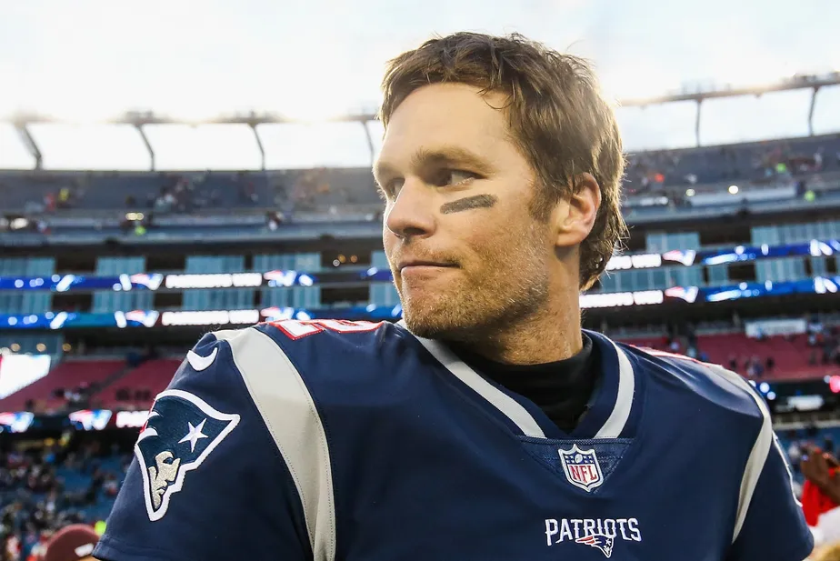

O futebol americano é um esporte coletivo jogado por duas equipes de onze jogadores cada. O objetivo é marcar pontos através de jogadas ofensivas e defensivas, com o uso de uma bola oval. O jogo é conhecido por sua natureza física e estratégica, e por grandes competições como o Super Bowl.
Melhor jogador do mundo
Tom Brady é considerado um dos melhores jogadores de futebol americano de todos os tempos. Ele é conhecido por sua liderança, habilidade e capacidade de marcar gols. Com uma carreira repleta de conquistas, incluindo várias Super Bowl, Tom Brady é uma figura icônica no mundo do futebol americano e continua a inspirar fãs e jogadores ao redor do mundo.
